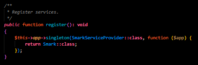
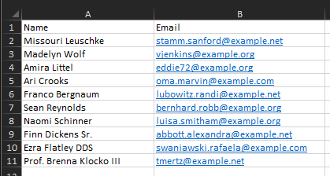
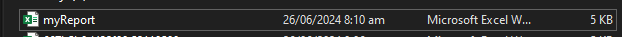

git clone git@github24377965mjGithub/smark
or download the zip file here
For Laravel
Paste the Smark folder inside the app/ folder.
Create a service provider
Go to the terminal and type: php artisan make:provider SmarkServiceProvider
Register the Smark class on the SmarkServiceProvider.
$this->app->singleton(SmarkServiceProvider::class, function ($app) {
return Smark::class;
});

Syntax:
Smark::compute(method, array of numbers (as many as you want))
Addition
Smark::compute('add', [2, 3, 4, 5])
Output: 14
Subtraction
Smark::compute('minus', [5, 4])
Output: 1
Multiplication
Smark::compute('multiply', [5, 4])
Output: 25
Division
Smark::compute('divide', [4, 2])
Output: 2
isEven()
Syntax:
Smark::isEven(number)
Smark::isEven(24)
linearRegression()
Syntax:
Smark::linearRegression(xAxis array, yAxis array, result type)
Smark::linearRegression([1, 4, 3, 4, 5, 6], [2, 3, 4, 5, 6, 8], 'slope') Smark::linearRegression([1, 4, 3, 4, 5, 6], [2, 3, 4, 5, 6, 8], 'intercept') Smark::linearRegression([1, 4, 3, 4, 5, 6], [2, 3, 4, 5, 6, 8], 'all') {"slope":1.1235955056179776,"intercept":0.3595505617977525} Smark library offers an exceptional solution for exporting data to Excel, providing a robust and user-friendly experience. With its seamless integration and efficient functionality, this library ensures that exporting data is both quick and reliable. Whether for simple data exports or more complex tasks, Smark library stands out as a dependable tool that enhances productivity and simplifies workflows.
Syntax:
Smark::downloadExcel(array(array of headers), array(array of data to be inserted))
Smark::downloadExcel(array(
array(
'name' => 'Name',
'email' => 'Email'
)
), App\Models\User::select('name', 'email')->get())
Output:

Syntax:
Smark::downloadExcelAs(filename, array(array of headers), array(array of data to be inserted))
Smark::downloadExcelAs('myReport', array(
array(
'name' => 'Name',
'email' => 'Email'
)
), App\Models\User::select('name', 'email')->get())
Output:

A string URL highlighter is a function that scans a given text and automatically detects and highlights URLs by converting them into clickable hyperlinks. This tool enhances text by making URLs interactive, improving user experience and functionality. The implementation typically involves using regular expressions to identify URLs and then wrapping them in HTML a tags for highlighting.
Syntax:
Smark::withUrl(string)
Smark::withUrl('Hello, https://google.com')
Output: Hello https://google.com
A JSON file CRUD (Create, Read, Update, Delete) operation involves managing data stored in JSON file. This set of functions allows you to perform basic data operations, such as creating new entries, reading existing data, updating specific records, and deleting unwanted entries.
public/json/sample.json
Syntax:
Smark::jsonRead(json file directory)
Smark::jsonRead('json/sample.json')
Output: []
Syntax:
Smark::jsonPush(json file directory, data)
Smark::jsonPush('json/sample.json', ['id' => 1, 'name' => 'Mark Jason'])
Output: [{"id": 1, "name": "Mark Jason"}]
Syntax:
Smark::jsonUnshift(json file directory, data)
Smark::jsonUnshift('json/sample.json', ['id' => 0, 'name' => 'Mark Jason'])
Output: [{"id": 0, "name": "Mark Jason"}, {"id": 1, "name": "Mark Jason"}]
Syntax:
Smark::jsonDelete(json file directory, key, target value (string, integer or float))
Smark::jsonDelete('json/sample.json', 'id', 0)
Output: [{"id": 1, "name": "Mark Jason"}]
Syntax:
Smark::jsonUpdate(json file directory, key, value (string, integer or float), target key, target value (string, integer or float))
Smark::jsonUpdate('json/sample.json', 'id', 1, 'name', 'Mark Jason Updated')
Output: [{"id": 1, "name": "Mark Jason Updated"}]